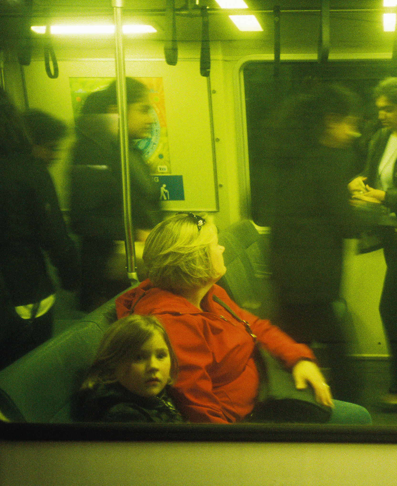
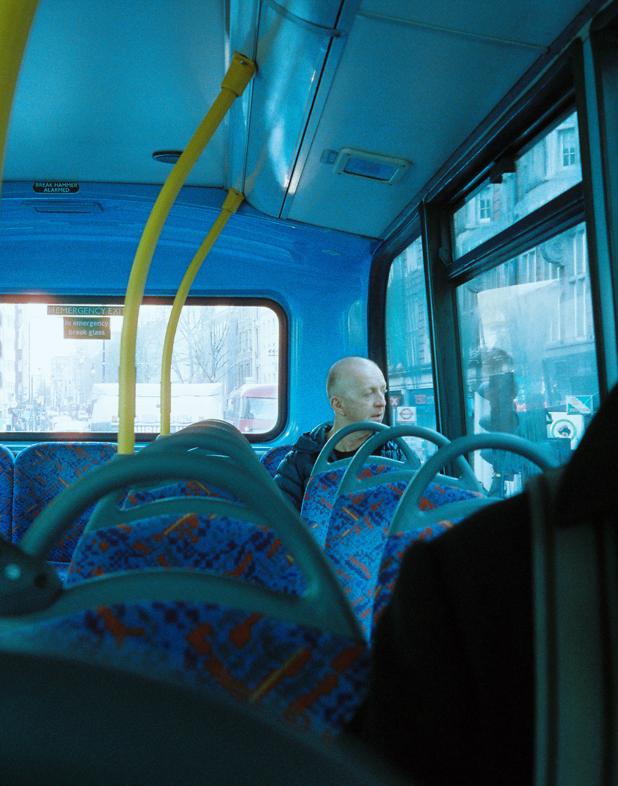

I spent my summer trying to capture everyday moments of beauty. At a time where everything seems impermanent, recording these vignettes of life has become more important than ever. With adulthood fast approaching, it can be difficult to look around - at the fading adolescent years, the transformation of recklessness to responsibility - without feeling a hint of loss. Nevertheless, serendipitous instances of adventure and friendship have taught me to live in the moment. Time is always fleeting - but these are the good old days! This series, comprising photographs from Hong Kong and Phuket, is my way of immortalizing the memories I made this summer – an ode to the people and places that struck me.

NOCTURNAL ANIMAL
I have always been fascinated by how the world transforms in the night time. Spaces pick up character when bathed in neon, and people begin to look a little stranger under lurid, artificial lighting. This series is a reflection of that fascination. As a nocturnal animal myself, I love to explore the streets of big cities after dark, taking photos of places or people that reveal an “electric-ness” about the night. This is a collection of photos I've taken on those midnight adventures from San Francisco, to New York City, to Hong Kong.

ETERNAL BLUE HOUR
Nunc tempus, mauris eu pulvinar dapibus, elit lorem cursus lacus, nec aliquam neque velit vitae dolor. Maecenas ut ipsum a enim pharetra finibus sit amet ac massa. Vestibulum interdum, velit id egestas pharetra, turpis sem luctus massa, non blandit sapien ligula bibendum lorem. Pellentesque habitant morbi tristique senectus et netus et malesuada fames ac turpis egestas. Quisque gravida elementum pretium. Integer accumsan justo enim, et interdum enim volutpat a. Vestibulum luctus euismod tortor, ac tristique erat mollis a. Maecenas vitae vulputate diam. Integer et dui ac libero dapibus vestibulum. Integer vel dolor porttitor, iaculis magna ac, posuere metus.